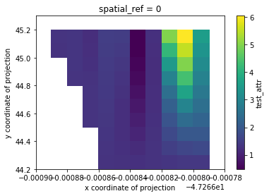
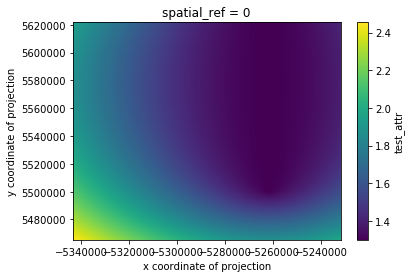
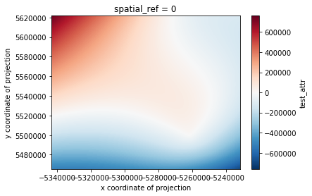

Example - Rasterizing Point Data¶
[1]:
import json
from functools import partial
import geopandas as gpd
from shapely.geometry import box, mapping
from geocube.api.core import make_geocube
from geocube.rasterize import rasterize_points_griddata, rasterize_points_radial
%matplotlib inline
Load in geopackage data and add CRS¶
[2]:
gdf = gpd.read_file(
"../../test/test_data/input/time_vector_data.geojson",
crs={'init': 'epsg:4326'}
)
[3]:
gdf.head()
[3]:
| test_attr | test_str_attr | test_time_attr | geometry | |
|---|---|---|---|---|
| 0 | 1.3 | dcf86619 | 5/21/2016 10:09:21 AM -05:00 | POINT (-47.266811 44.219318) |
| 1 | 1.3 | dcf86619 | 5/21/2016 10:09:21 AM -05:00 | POINT (-47.266798 44.219318) |
| 2 | 1.9 | dcf86619 | 5/21/2016 10:09:21 AM -05:00 | POINT (-47.266807 44.219318) |
| 3 | 1.3 | dcf86619 | 5/21/2016 10:09:21 AM -05:00 | POINT (-47.266803 44.219318) |
| 4 | 1.3 | dcf86619 | 5/21/2016 10:09:21 AM -05:00 | POINT (-47.266794 44.219318) |
Convert to raster with GeoCube¶
Load into grid with griddata nearest resampling¶
[4]:
geo_grid = make_geocube(
vector_data=gdf,
measurements=['test_attr'],
resolution=(-0.1, 0.00001),
rasterize_function=rasterize_points_griddata,
)
[5]:
geo_grid
[5]:
<xarray.Dataset>
Dimensions: (x: 12, y: 11)
Coordinates:
* y (y) float64 45.25 45.15 45.05 44.95 ... 44.55 44.45 44.35 44.25
* x (x) float64 -47.27 -47.27 -47.27 ... -47.27 -47.27 -47.27
spatial_ref int64 0
Data variables:
test_attr (y, x) float64 1.3 1.3 1.3 1.2 1.3 1.3 ... 2.3 1.3 1.9 1.3 1.3
[6]:
# mask nodata and plot
geo_grid.test_attr.where(geo_grid.test_attr!=geo_grid.test_attr.attrs['_FillValue']).plot()
[6]:
<matplotlib.collections.QuadMesh at 0x7f2cd9151cf8>

Load into grid with griddata cubic resampling¶
[7]:
geo_grid = make_geocube(
vector_data=gdf,
measurements=['test_attr'],
resolution=(-0.1, 0.00001),
rasterize_function=partial(rasterize_points_griddata, method="cubic"),
)
[8]:
# mask nodata and plot
geo_grid.test_attr.where(geo_grid.test_attr!=geo_grid.test_attr.attrs['_FillValue']).plot()
[8]:
<matplotlib.collections.QuadMesh at 0x7f2cd9041b38>

Load into user-defined grid with radial linear resampling¶
[9]:
geo_grid = make_geocube(
vector_data=gdf,
measurements=['test_attr'],
geom=json.dumps(mapping(box(-48, 44, -47, 45))),
output_crs="+init=epsg:3857",
resolution=(-300, 300),
rasterize_function=rasterize_points_radial,
)
[10]:
# mask nodata and plot
geo_grid.test_attr.where(geo_grid.test_attr!=geo_grid.test_attr.attrs['_FillValue']).plot()
[10]:
<matplotlib.collections.QuadMesh at 0x7f2cd6f6c8d0>

Load into user-defined grid with radial cubic resampling¶
Note: This example is simply to demonstrate the option and and would need to be adjusted for better results. As seen in the plot below, the values swelled quite a bit due to the input generating an ill-conditioned matrix.
[11]:
geo_grid = make_geocube(
vector_data=gdf,
measurements=['test_attr'],
geom=json.dumps(mapping(box(-48, 44, -47, 45))),
output_crs="+init=epsg:3857",
resolution=(-300, 300),
rasterize_function=partial(rasterize_points_radial, method="cubic"),
)
/home/snowal/miniconda3/envs/goldfinger/lib/python3.6/site-packages/scipy/interpolate/rbf.py:241: LinAlgWarning: Ill-conditioned matrix (rcond=3.07097e-19): result may not be accurate.
self.nodes = linalg.solve(self.A, self.di)
[12]:
# mask nodata and plot
geo_grid.test_attr.where(geo_grid.test_attr!=geo_grid.test_attr.attrs['_FillValue']).plot()
[12]:
<matplotlib.collections.QuadMesh at 0x7f2cd6ea4898>
